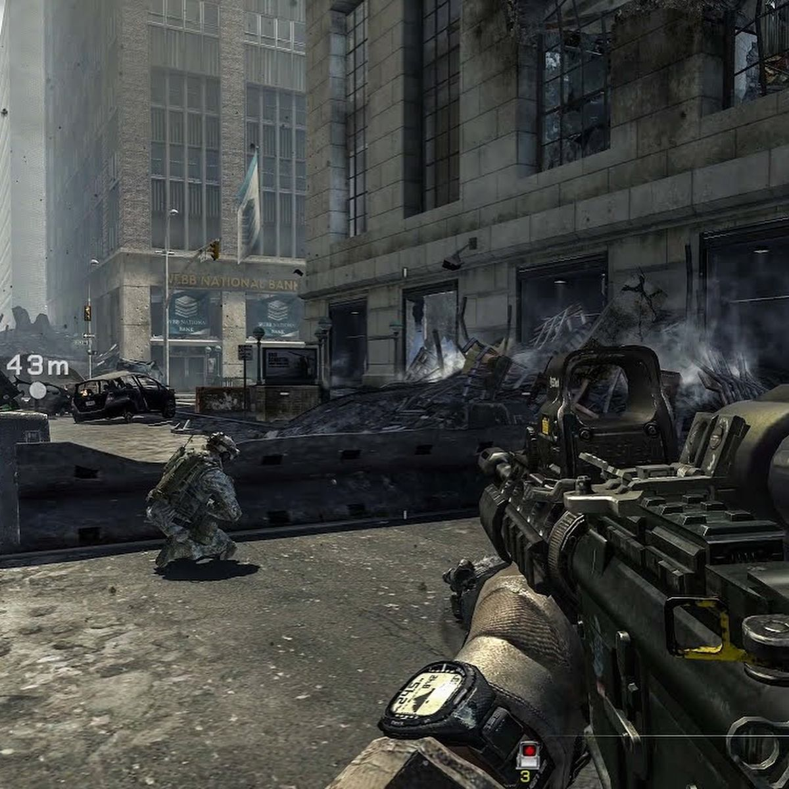
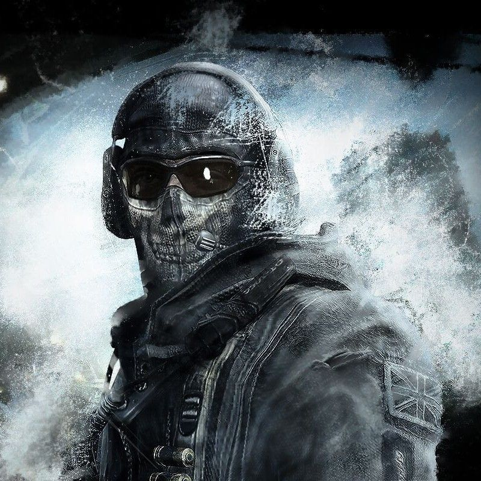

Un Jeu qui à marqué des générations
Critique27 Septembre 2025
Call of Duty: Modern Warfare 2 est vraiment l’un des meilleurs jeux de tir à la première personne. La campagne solo est super intense et pleine d’action. Les missions sont variées et tu restes accroché du début à la fin.
Source : Pinterest
Chaque combat est rapide et précis, ce qui rend le jeu hyper fun. Mais ce qui rend MW2 vraiment génial, c’est le mode multijoueur. Il y a plein d’armes, de cartes et de stratégies différentes.
Tu peux jouer comme tu veux : sniper, tactique ou foncer dans le tas. Ça rend chaque partie unique et super addictive. Même des années après sa sortie, MW2 reste un jeu qu’on a envie de relancer encore et encore.
Et puis, il y a Simon "Ghost" Riley. Ce gars est juste légendaire ! Avec son masque en forme de crâne et son look de soldat ultra discret, il est hyper mystérieux et classe en même temps. Ghost n’est pas juste un personnage badass : il est loyal avec son équipe et toujours prêt à se sacrifier pour ses amis.
Source : Pinterest
Tu te sens tout de suite impressionné par lui dans le jeu. Même s’il parle peu, il reste super humain et ses actions te marquent. C’est pour ça que Ghost est devenu un personnage culte pour tous les fans de MW2.
En gros, Call of Duty: Modern Warfare 2 est un jeu qui mélange action pure et moments forts grâce à ses personnages comme Ghost. C’est fun, intense et tu ne t’ennuies jamais. Si tu veux un FPS qui te fait vibrer et te tient en haleine du début à la fin, MW2 est clairement un classique à ne pas manquer.